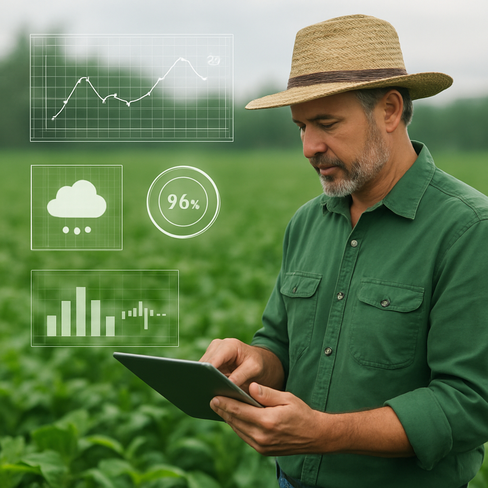
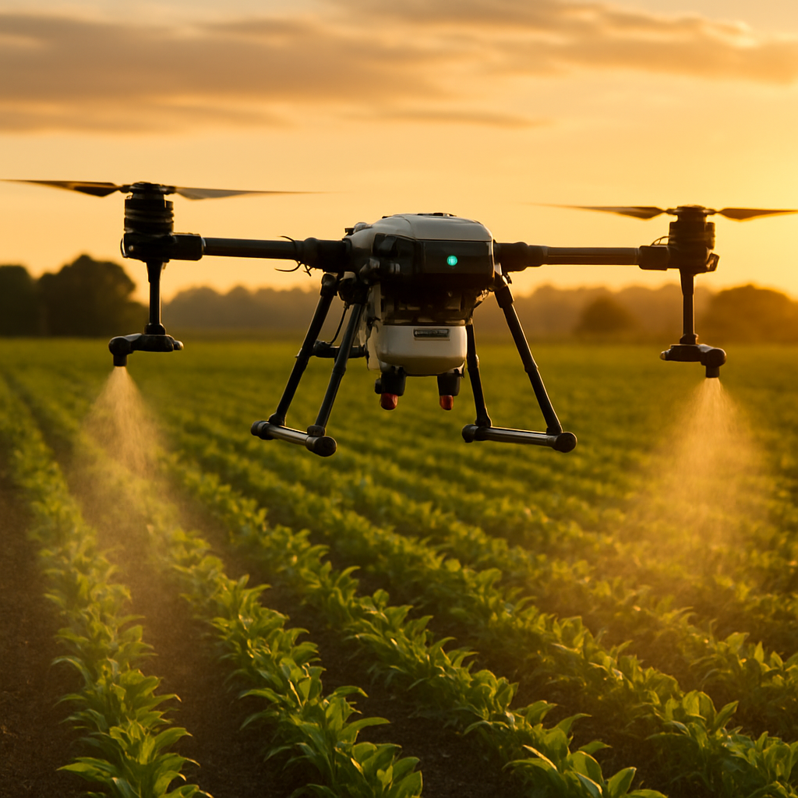
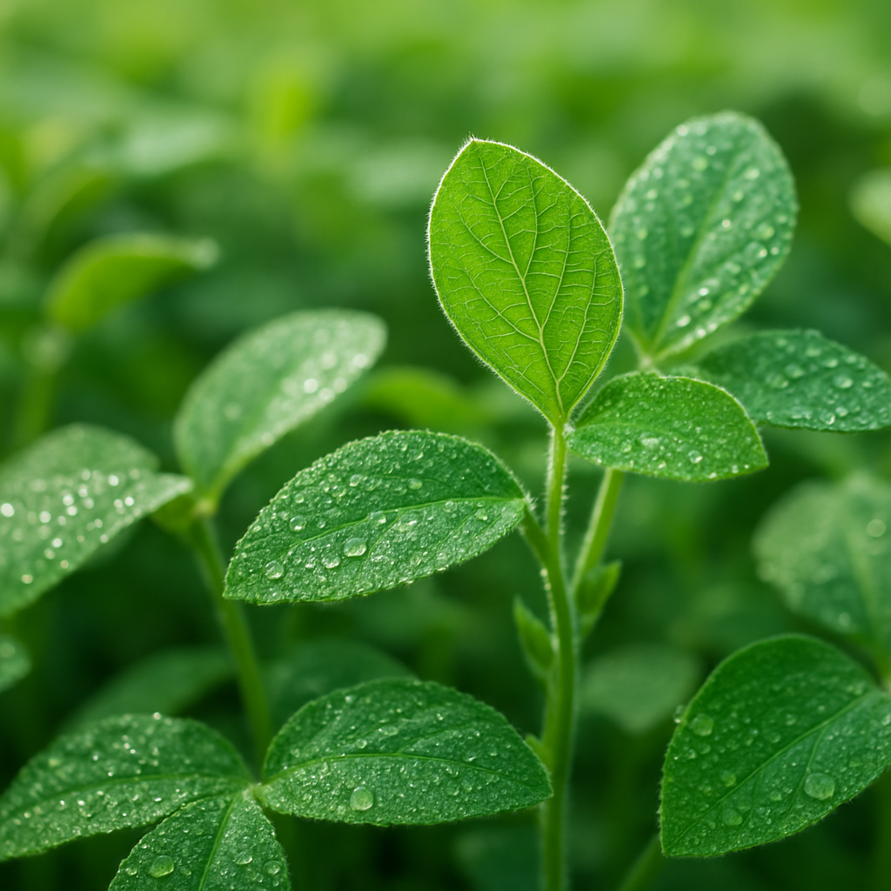
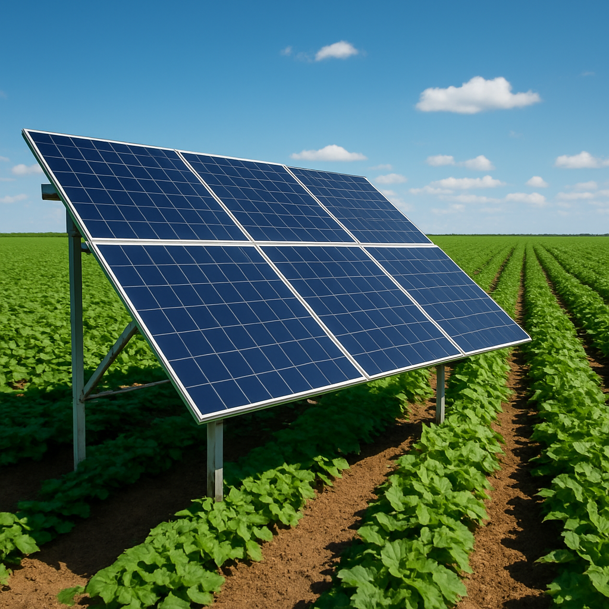
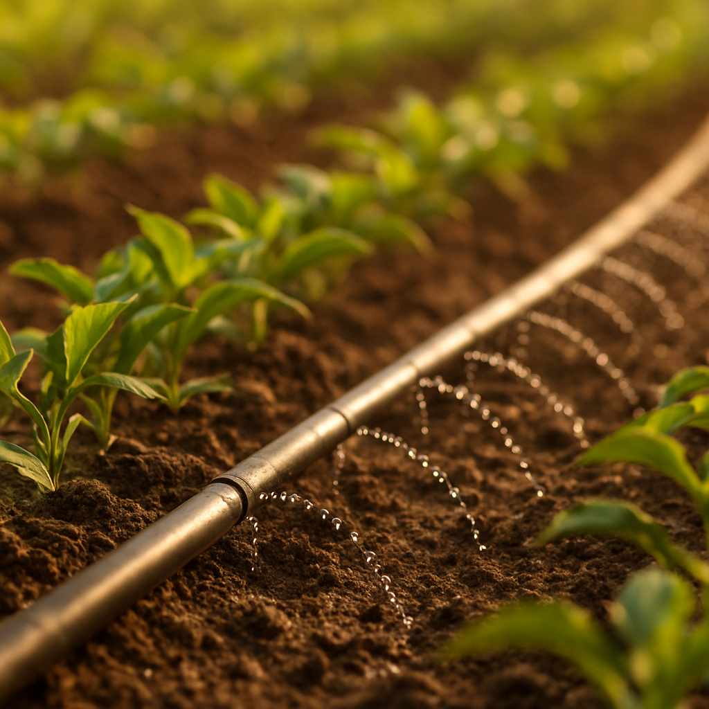
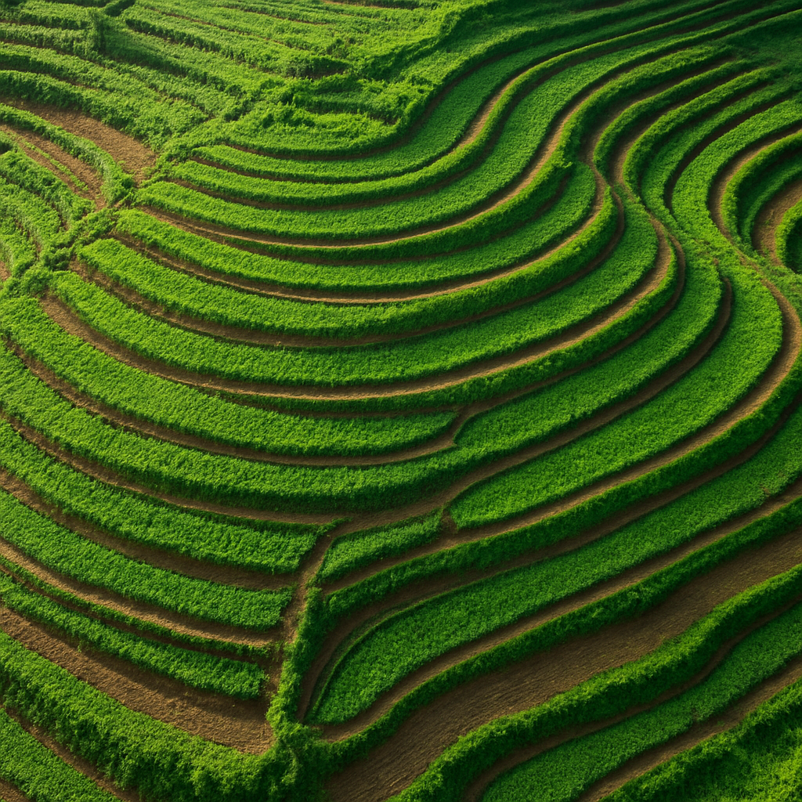
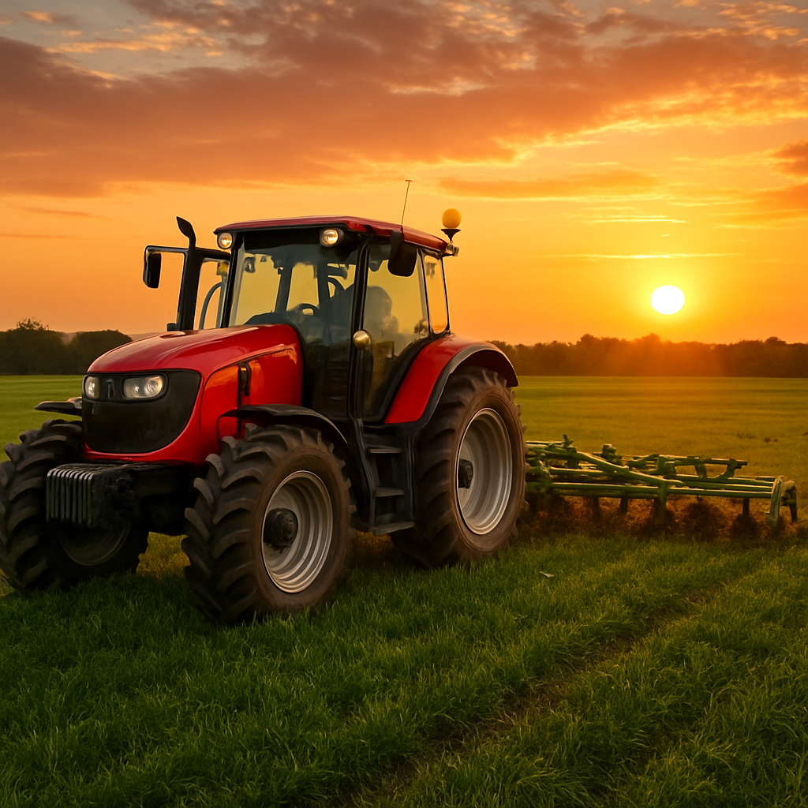
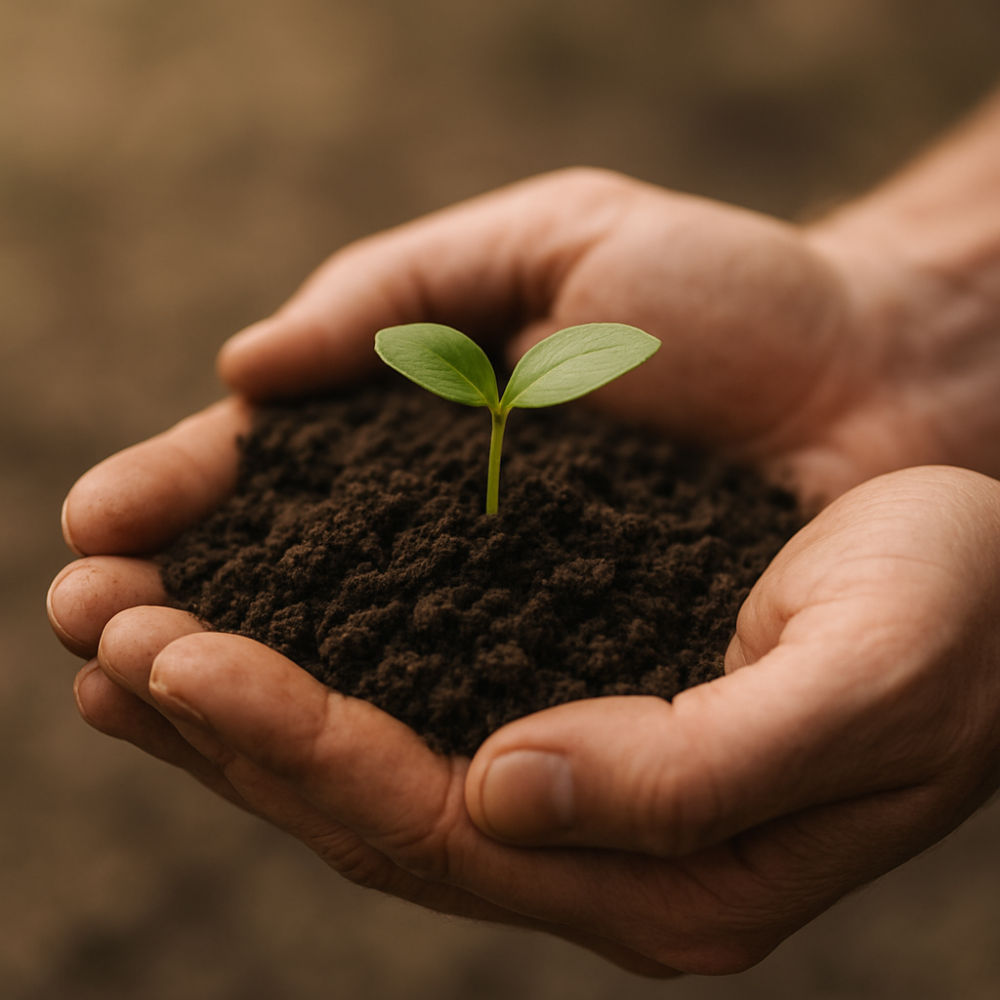

Conservação do solo
Rotação de culturas e plantio direto que mantêm o solo fértil e vivo.
Produzir mais, preservar melhor.
Unimos tecnologia de ponta e responsabilidade ambiental para aumentar a produção agrícola respeitando cada recurso do planeta.

A sustentabilidade agrícola é a capacidade de produzir alimentos e matérias-primas de forma contínua, sem comprometer os recursos naturais das próximas gerações. Na Agroforte, isso é o ponto de partida de tudo.
Cultivo planejado que respeita os ciclos naturais do solo e do clima.
Sensores e dados orientam cada decisão, reduzindo desperdícios.
Preservação de áreas verdes, água e biodiversidade local.
Seis fundamentos que sustentam um agronegócio produtivo e responsável.
Rotação de culturas e plantio direto que mantêm o solo fértil e vivo.
Irrigação de precisão que entrega a quantidade exata, na hora certa.
Energia solar e limpa alimentando operações de baixo carbono.
Máquinas e processos otimizados para máxima produtividade.
Aproveitamento de insumos e reaproveitamento de resíduos orgânicos.
Proteção de matas ciliares, nascentes e da biodiversidade do entorno.
Indicadores reais do impacto positivo das práticas sustentáveis.
Economia de água
Redução de emissões
Áreas verdes preservadas
Produção sustentável
A inovação é o motor de uma agricultura mais limpa e eficiente. Combinamos sensores, satélites e análise de dados para produzir mais com menos recursos.
Aplicação localizada de insumos, no ponto exato da necessidade.
Imagens de satélite e drones acompanham a lavoura em tempo real.
Umidade, temperatura e nutrientes medidos para decisões precisas.

Práticas reais que unem produtividade e meio ambiente.






Exemplos reais de como transformamos teoria em resultado.
Alternamos espécies plantadas para regenerar nutrientes do solo naturalmente, reduzindo a necessidade de fertilizantes químicos.
Sistemas de captação armazenam água pluvial para irrigação, diminuindo o consumo de recursos hídricos.
Resíduos vegetais viram adubo natural, fechando o ciclo e eliminando desperdícios na propriedade.
Faixas de vegetação nativa conectam fragmentos de mata, protegendo a fauna e os polinizadores.
É produzir alimentos e matérias-primas de forma economicamente viável, socialmente justa e ambientalmente responsável, garantindo recursos para o futuro.
Não. Com tecnologia e gestão eficiente, é possível aumentar a produtividade enquanto se reduz o uso de água, energia e insumos.
Agricultura de precisão, sensores de solo, monitoramento por satélite e drones, além de sistemas inteligentes de irrigação e energia solar.
Por meio de irrigação por gotejamento controlada por sensores de umidade e do reuso de água da chuva captada na propriedade.
Tem uma dúvida, proposta ou quer conhecer mais sobre nossas práticas? Envie uma mensagem e nossa equipe responderá em breve.